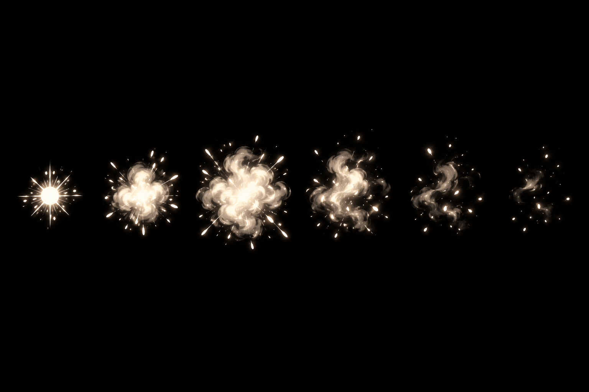
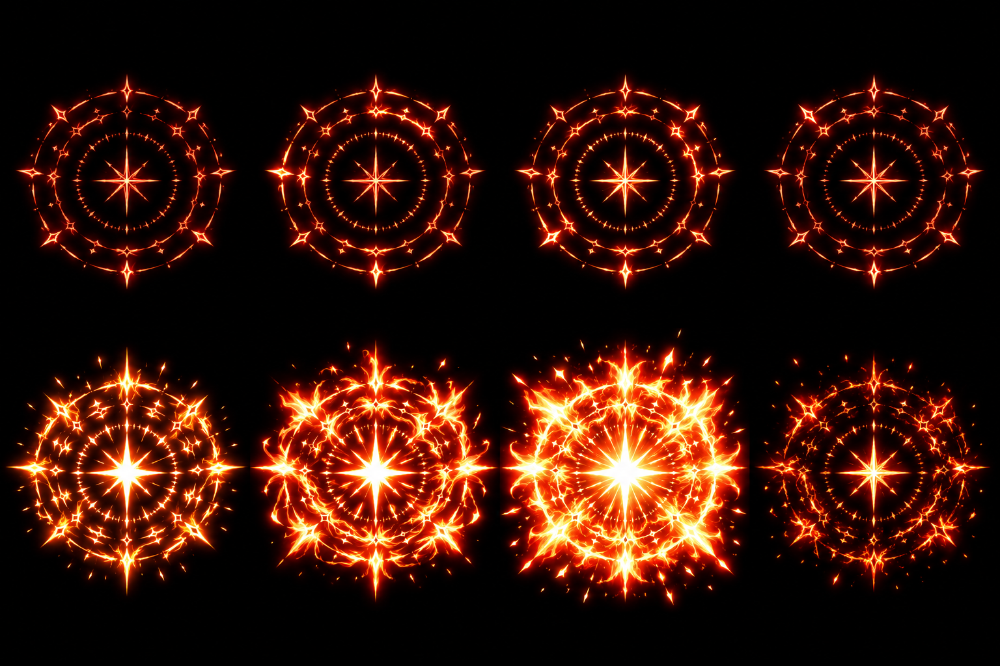

Piloto VFX Lote 2 · v01
DRAFT · fontes para revisão; normalização e aceite pendentes.
M01_morte_poeira_v01.png
Abrir fonte

P02_xp_coleta_v01.png
Abrir fonte
G03_boss_quadrante_runas_v01.png
Abrir fonte

Revisão técnica